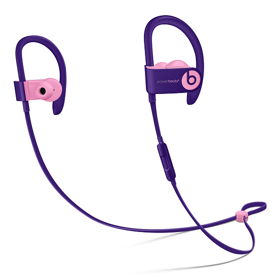

Chromesthesia
Беспроводные наушники-вкладыши Powerbeats3

Краткое описание:
Эти наушники с ярким стильным дизайном и фирменным звучанием Beats созданы для тех,
кто хочет обратить на себя внимание, не боится смелых решений, не идёт на компромисс
и делает то, что приносит радость.
Характеристики:
-
Тип входа: Стереоразъём 3,5 мм
-
Другие функции: Шумоизоляция, Беспроводная связь, Встроенная регулировка громкости,
С пультом дистанционного управления и микрофоном
-
Форма: Вкладыши
-
Совместимость с Bluetooth: Bluetooth 4.0
-
Конфигурации динамиков: Стерео
-
Источник питания: Аккумулятор
-
Аккумуляторы: Перезаряжаемые литиево-ионные аккумуляторы
Подробное описание товара:
До 12 часов работы без подзарядки — заряда хватит на несколько тренировок.
Защита от пота и воды для интенсивных занятий спортом.
Превосходное динамичное звучание поможет вам работать с большей отдачей.
Если наушники разрядились, 5-минутной зарядки Fast Fuel хватит на целый час воспроизведения.
Отвечайте на звонки, управляйте воспроизведением и обращайтесь к Siri, используя многофункциональные
элементы управления на чашке наушников.
©
Все права защищены.